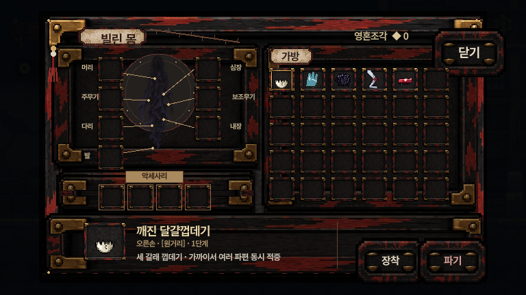
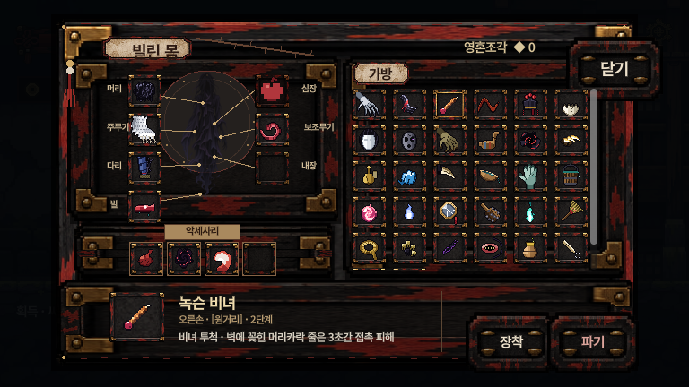

그슨대 장비 현황
구현된 무기·장비, 이펙트, 아이템 모습, 인벤토리를 한 장에 정리했습니다. 기준일 2026-11-12.
이 문서는 코드·에셋·설계서를 읽어 만든 정리입니다. 게임을 실행해 모든 무기를 확인한 것은 아니며, 구현 여부는 코드와 파일이 있는지를 기준으로 했습니다. 인벤토리 화면 두 장만 실제 렌더러로 캡처했습니다.
구현된 무기
카드마다 아이콘, 수치, 효과 설명, 필드 드롭 모습, 공격·스킬·명중 이펙트(실제 게임 시트 재생)를 보여 줍니다.
세트
무기는 한 세트에만 속합니다. 세트 완성 효과는 설계서에서 두억시니만 확정입니다.
인벤토리 모습

마을 시작 직후 모습(기본 지급 장비 5개가 가방에 있음). 768×432 기준 실제 렌더러 캡처.

장비 9종 착용 + 가방 16종. 선택한 아이템(피 묻은 족두리)의 상세·장착·파기 버튼.